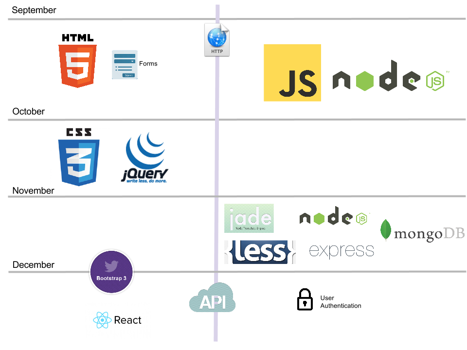

Beginning HTML and CSS
Meeting Time: Monday, Wednesday, Thursday 11:30am-12:40pm
Location: ASB 429
Professor: Scott Frees, Professor of Computer Science
Contact Information
Office G315
Phone (201) 684-7726
Email sfrees@ramapo.edu
Office Hours: Monday 12:45-1:45pm and Thursday 4-5pm
This course provides in-depth treatment of the critical languages, design patterns, and technologies underpinning all of modern web application development. The basics of networking, along with the details of the HTTP protocol are introduced. HTML (through version 5), CSS (through version 3) are presented from the perspective of an application developer.
JavaScript is covered as the primary language for both client side development (utilizing jQuery and other front-end libraries) and server side (utilizing the node.js library).
Advanced JavaScript topics such as closures and asynchronous programming are covered in depth.
The course also introduces the MVC (Model View Controller) architecture for web development and covers the Express framework including EJS and Jade templating, along with front-end toosl like LESS, Bootstrap, and React.
An overview of other popular languages and frameworks such as LESS, Ruby on Rails, ASP.NET MVC, and PHP are also provided to increase the breadth of the students’ knowledge in the field.
Note, this course is taught under the assumption that the student has programming knowledge and experience in an object-oriented language such as C++ or Java, as it JavaScript is used extensively throughout the semester. The emphasis of this course is web development from an application programmer’s perspective. It is a technical course, not suitable for students without an adequate background in computer science.
We'll be bouncing back and forth between server-side and client-side technologies throughout the semester. On the server (right side of the picture below), all of our work will be based on Node.js, and we'll start out by looking at JavaScript fundamentals in detail. We'll migrate to looking at frameworks (express), data access (MongoDB), and more advanced topics later in the semester.
In the beginning of the term, client-side (left side of picture) will be focused on core technologies - HTML, CSS, and JavaScript/jQuery. Towards the end of the semester we'll look at big productivity boosters like Twitter's Bootstrap and Facebooks' React.

This course is taught under the assumption that the student has programming knowledge and experience in an object-oriented language such as C++ or Java, as it JavaScript is used extensively throughout the semester. The emphasis of this course is web development from an application programmer’s perspective. It is a technical course, not suitable for students without an adequate background in computer science.
CMPS 311 - Operating Systems
No prior experience in web development is required, however students are expected to have strong programming skills in an object oriented language such as C++, Java, or C# prior to taking this course.
by Rob Larson
ISBN-10: 1118340183
ISBN-13: 978-1118340189
Required

JavaScript - the definitive guide - 6th Edition
by David Flanagan
ISBN-10: 0596805527 ISBN-13: 978-0596805524
Required

Professional Node.js: Building Javascript Based Scalable Software
by Pedro Tiexeira
ISBN-10: 1118185463 ISBN-13: 978-1118185469
Recommended
This course will require you to write HTML, CSS, and JavaScript code. A simple text editor is all that is necessary, however installing a good programming editor is highly recommended. In addition, you will also need to install Node.js. Node.js, along with many programming text editors, are available on all major operating systems (Windows, Mac OS X, Linux).
It is highly recommended that you have access to your own computer to do your development on, most machines in college labs will not have Node.js installed. However, for assignments only dealing with client-side programming, you may be able to use any machine in the labs.
While your basic text editor will allow you to write HTML/CSS and JavaScript, it can be quite error prone without an editor that supports automatic indentation and syntax highlighting. There are many possibilities. If you wish, you can also use larger integrated develoment environments (IDE), such as Microsoft Visual Studio or eclipse. Use of a full-fledged IDE is not absolutely necessary however, and many web developers prefer to use light-weight editors such as those listed below.
All slides, code, and any other material for this class will always be posted to MOODLE. This site will be kept up to date as well, however if there is ever a difference in schedule or due date, always view Moodle as the definative source of information.
Slides in PDF form (for printing)
There are three homework assignments and two larger programming projects assigned for this course.
| Link to Homework Assignment | Due Date |
|---|---|
| Homework 1 | 9/21 |
| Homework 2 | 9/24 |
| Homework 3 | 10/26 |
| Link to Projects | Due Date |
|---|---|
| Project 1 | 10/21 |
| Project 2 | 11/9 |
The final project will be due the same day as our scheduled final exam. I will announce the full details of the project in mid-November.
| % | Activity |
|---|---|
| 5% | Attendance |
| 15% | Homework Assignments (3) |
| 20% | Programming Projects (2) |
| 40% | Exams (2) |
| 20% | Final Project (in place of Final Exam) |
All assignments will be turned in electronically. A late penalty of 10 points per day will be applied to all late assignments. No assignments over 5 days late will be accepted. The required format/method of your electronic submissions will be outlined for each assignment. Deviation from these requirements may result in a 5-point penalty.
You are required to attend each class, late arrival (after attendance has been recorded) will count as a full absence. You are allowed 1 unexcused absence (all others will count against your attendance grade). You must have documentation to receive an “excused” absence.
| Letter | Numeric Score | Letter | Numeric Score | Letter | Numeric Score |
|---|---|---|---|---|---|
| A | 100-94 | A- | 93-90 | ||
| B+ | 89-87 | B | 86-84 | B- | 83-80 |
| C+ | 79-77 | C | 76-74 | C- | 73-70 |
| D+ | 69-67 | D | 66-60 | F | < 60 |
Students are expected to read and understand Ramapo College’s Academic Integrity Policy, which can be found in the Ramapo College Catalog. Members of the Ramapo College community are expected to be honest and forthright in their academic endeavors. Students who are suspected of violating this policy will be referred to the Office of the Provost.
When completing lab programming exercises, you may review code with your fellow students; however, copying source code is strictly forbidden. For homework programming assignments, you may discuss ideas, however you may not allow others to see your source code or examine others’. Sharing of source code is extremely easy to detect and is strictly prohibited. If sharing of source code is suspected, intentional or otherwise, both parties will immediately be referred to the Office of the Provost.
If you need course adaptation or accommodations because of a disability that has been documented with the Office of Specialized Services, please make an appointment during my office hours.